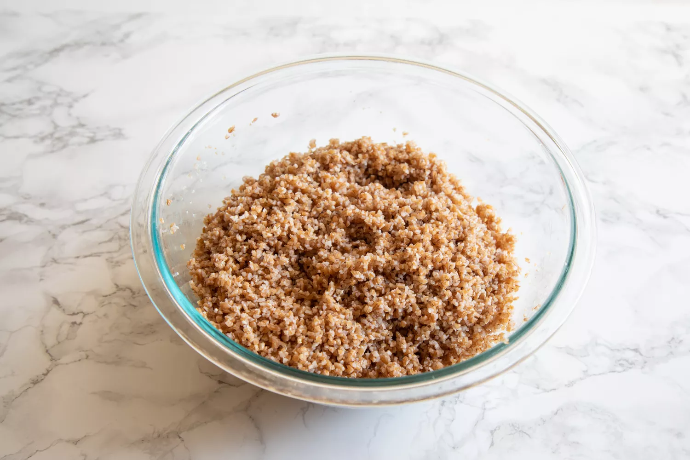

Tabbouleh

Tabbouleh Recipe
Fresh and easy to prepare,
tabbouleh is a traditional Middle Eastern grain
salad made with bulgur wheat, fresh herbs, tomatoes,
lemon juice, and olive oil. Leftovers make a great lunch!
Ingredients
- 2 cups vegetable stock, chicken stock, or water
- 1 teaspoon kosher salt
- 2 cups bulgur wheat
- 1/2 cup extra virgin olive oil
- Juice and finely grated zest of 2 lemons
- 5 to 6 Roma or plum tomatoes, seeded and chopped
- 2 scallions, chopped, including the greens
- 2 to 3 cups parsley, chopped
- 1 cup fresh mint leaves, chopped
Steps
- Cook the bulgur: Place the bulgur in a medium heatproof bowl. Bring the stock or water and the teaspoon of salt to a boil, and then pour it over the bulgur. Let sit for 30 minutes to an hour, until it has absorbed all the liquid.
- Combine the bulgur with oil, lemon juice, zest, and bulgar: In a large bowl, add the olive oil, lemon juice and zest, and bulgur. Mix well.
- Add the tomatoes, scallions, and herbs: Add the tomatoes, scallions, and herbs to the bulgar mixture. Stir till well combined.
- Let the dish sit: Taste the tabbouleh, and add more salt, olive oil, or more lemon juice to taste. Let marinate for at least 30 minutes before serving. Will keep chilled for several days.